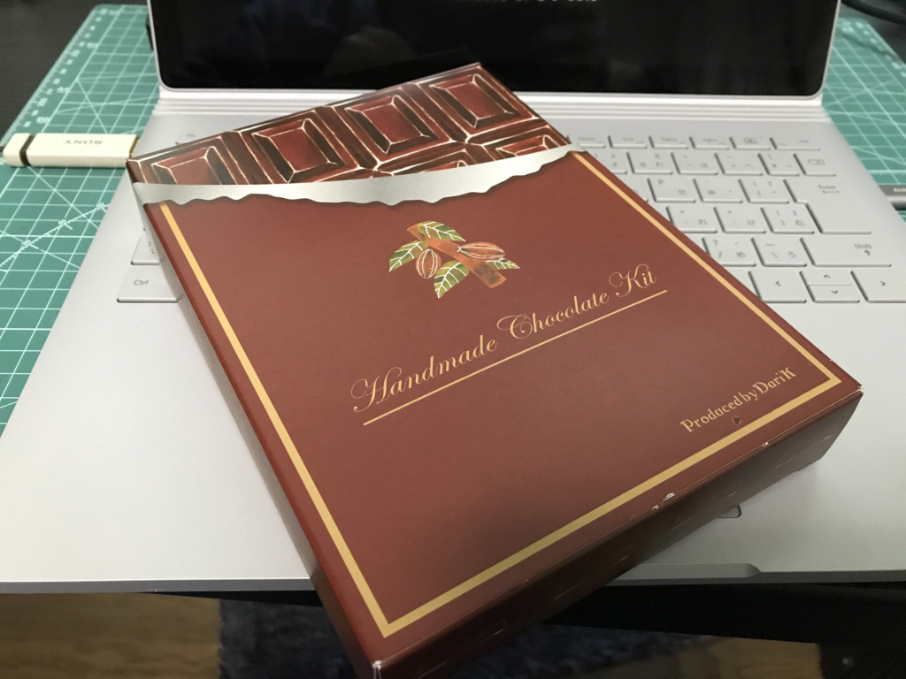
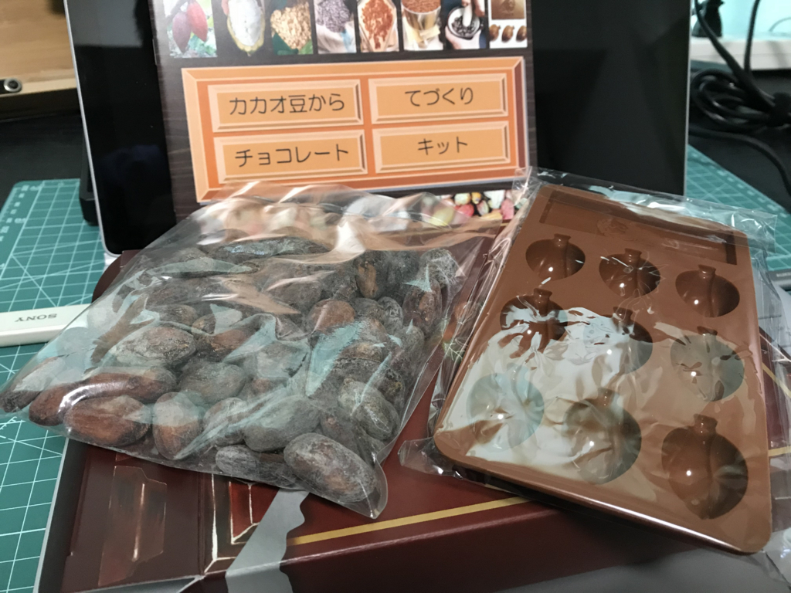
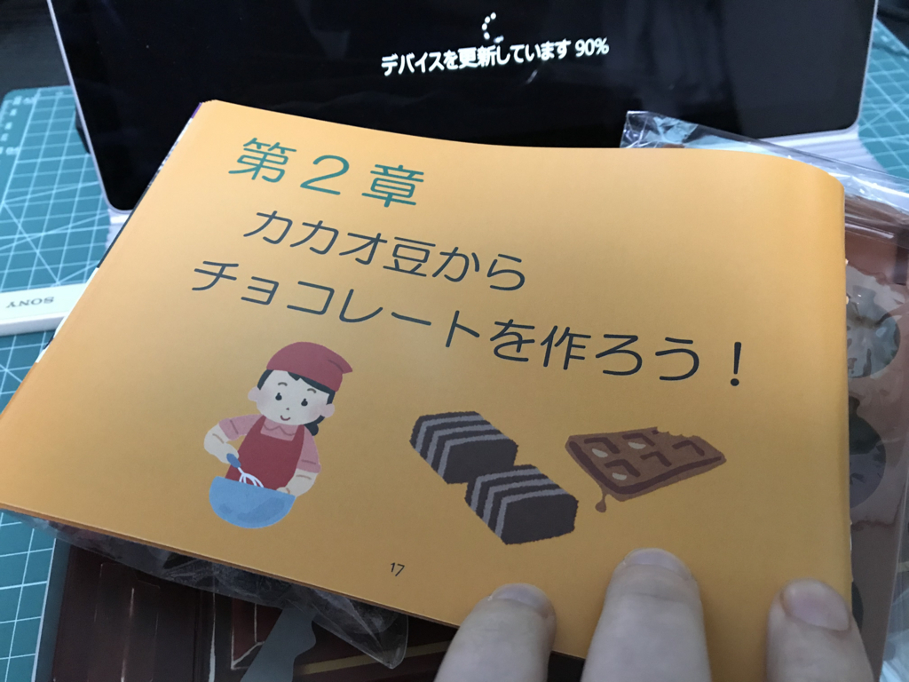
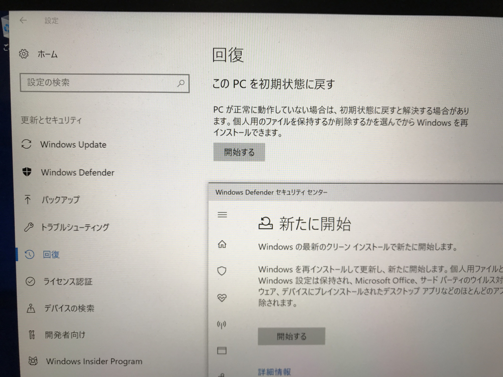
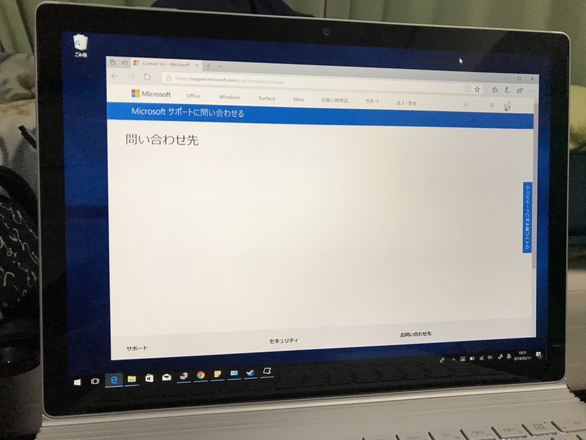
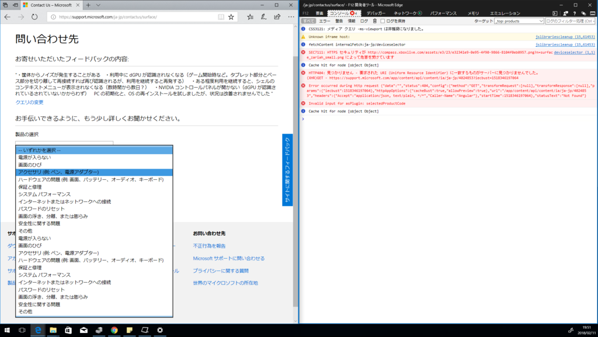
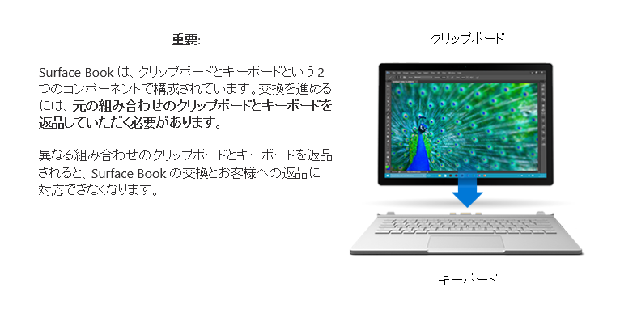
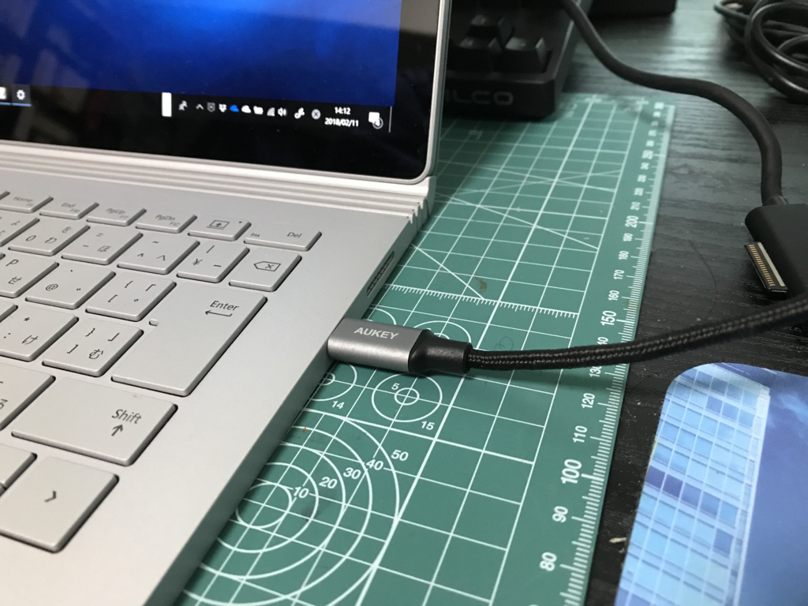

日記：バレンタインチョコ（？）をいただきました＆Surface Book 2 を修理に出す決意をした
執筆日時：
三連休だけど、結局家から出ずに、半分仕事、半分ゴロゴロな生活を送ってしまっています。昨日は午前中お仕事、午後は調子の悪い Surface Book 2 のクリーンインストールと、万が一の場合に備え、古いデスクトップ PC で仕事ができるように環境を整える作業を進めていました。
すると、郵便屋さんが「郵便受けに荷物が入らないから受け取れ」とインターホンを鳴らします。その日は Amazon からの受け荷もないはずなのに、なんだろうと思いつつ、共用玄関のロックを解除して中に招き入れたのですが――

ちょっと早いバレンタインチョコでした。どなたかは存じませんが、ありがとうございます。でも、これ、自分でマメからチョコレートを作れってことか？ 一瞬「若い女の子のファンが贈ってくれたのかのぅ( *´艸｀)」などと思っていたのですが、もしかすると「自分でチョコ作って自分で食うみじめさを味わうがいい」というメッセージったり、「ホモチョコでも作って贈ってろよ、カス」という意図が隠されているのかもしれません。


付属の冊子をパラパラとめくってみたのですが、チョコを作る過程というのはなかなか面倒なもののようです。チョコレートを作るヒトへの尊敬の念が高まりました。この手作りキットは、そのうちチャレンジしてみたいと思います。
Surface Book 2 のクリーンアップ

今回は回復メディアを作成して OS の再インストールをしてみましたが、結局症状は改善しませんでした。現状をまとめるとこんな感じ。
- ノイズが発生する：HDD が回転するときによくにた、ジージー音。たまにピーという感じの音も。エアコンを消した部屋だと、ときどき耳障りなレベル。多少はしょうがないものだと思ってるけど、ほかの不具合との合わせ技で気になる
- dGPU が認識されなくなる：クリップボードとキーボード（後述）を再接続すると認識されるが、そのまま使い続けると数10分程度でまた認識されなくなる。ゲームや Google Chrome を起動するときに認識されなくなることが多いような気がする
- NVIDIA コントロールパネルが起動しない：今まで気にしてなかったけど、dGPU が認識されなくなる問題と関連しているのかも。クリーンアップ直後から開けない
- 長時間利用しているとシェルのコンテキストメニューが出なくなる：クリーンアップした環境でも発生したので、どうもグラフィックの問題なのではないかと思う
- タスクトレイのオーディアアイコンに×がつく：この問題は今回のクリーンアップで解消された
とくに dGPU が認識されなくなるのは、30万以上出して Surface Book 2 を買った意味がなくなるわけで。iGPU だけでも十分パワフルだし、日ごろそんなに問題になることはないのですが、それで使い続けるのも30万以上出した手前、悔しい（俺みたいな貧乏人にとっては清水ダイブの決意がないと買えないんだぞ！！）。面倒だけど、交換修理をお願いするしかない……。

と思って、Microsoft のサポートサイトで修理をリクエストしたのですが、途中で先に進めなくなる！ Microsoft Edge から Google Chrome に切り替えたら前に進めたので、最初はブラウザーの問題かなと思っていたのですが、あとでちょっと F12 をのぞいてみると、

問題の選択肢が二重になっていて、最初の方を選択するとそのまま進めるのですが、後の方を選択するとエラーで進めないという設計（ｗ）になっていたみたいです。ふぁっきん！ 以前、Surface 3 を修理に出したときもサポートサイトに不具合があって、ちゃんとフィードバックを送ったはずなのに……（サポートはどうでしたか？ みたいなこと、あとで聞かれるよね）
トラブルに巻き込まれているときってタダでさえ気が立っているのだから、こういうミスは減らしておいてほしいなーと思います。この前、修理に出した iPad Pro の対応と比べると、やっぱり Microsoft は数段落ちると評価せざるを得ません。
追伸

今日の学び。Surface Book のタブレット部分は「クリップボード」、ベース部分は「キーボード」と呼ぶのだそうです。知らなかったわ……

あと、Windows 10 の回復は電源に接続していないと行われないけど、これは USB-C でもイケる。